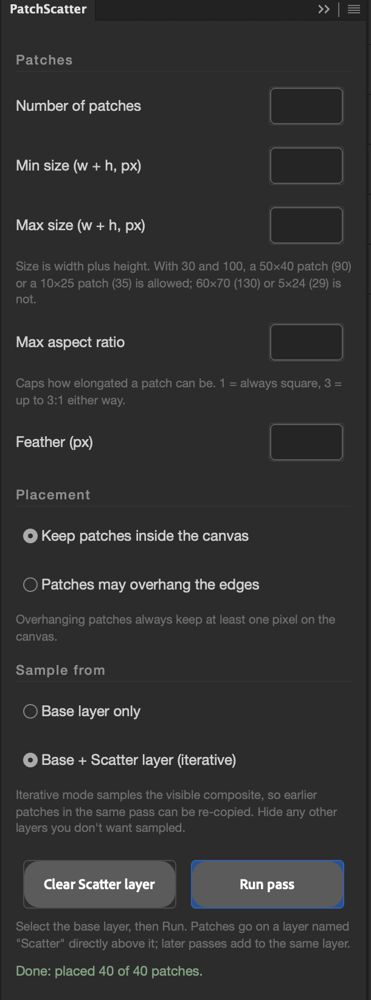

07
patchscatter
Copies random patches of a layer and drops them at random positions on a Scatter layer above it — optionally feeding on its own output.

about
Takes the selected layer as the base, then for each patch picks a random rectangle, feathers the selection, copies it and pastes it at a random position on a layer named Scatter directly above the base. The first pass creates that layer; later passes add to it, so the picture builds up over repeated runs. Each press of Run pass is one undo step. In iterative mode the copy is taken from the visible composite rather than the base alone, so patches placed earlier in the same pass can be re-copied and the process turns generative.
- app
- photoshop
- type
- uxp panel
- built by
- claude
- state
- working
- version
- 1.0.0
- requires
- Photoshop 24.2+
- plugin id
- com.simonmorse.patchscatter
- folder
- PatchScatter-Photoshop-Plugin
quick start
- 01Select the base pixel layer (not a group, and not the Scatter layer itself) and open the panel from Plugins.
- 02Set the number of patches, the size range and the feather, choose whether patches may overhang the edges and what to sample from, then press Run pass.
- 03Run again to add more patches to the same Scatter layer. Switch to Base + Scatter layer to let each pass sample the previous ones.
- 04Clear Scatter layer empties the layer without deleting it; undo removes a whole pass in one step.
controls
patches
- Number of patches1 – 5000
- How many rectangles are copied and placed in one pass.
- Min / Max sizepx, width + height
- One number for both dimensions: a patch's width plus its height is drawn uniformly from this range. With 30 and 100, a 50×40 patch (90) or a 10×25 patch (35) is allowed; 60×70 (130) or 5×24 (29) is not.
- Max aspect ratio1 – 1000, default 3
- Caps how elongated a patch can be, in either orientation. 1 forces squares; 3 allows anything up to 3:1.
- Featherpx, default 1
- Feathers each source selection before the copy, so patch edges soften and blend. 0 gives hard-edged rectangles.
placement
- Keep patches inside the canvasdefault
- Every patch lands wholly within the document bounds.
- Patches may overhang the edges
- Destinations run past the edges, but every patch keeps at least one pixel on the canvas so nothing is placed out of sight.
sample from
- Base layer onlydefault
- Each patch is copied from the base layer alone, whatever already sits on the Scatter layer.
- Base + Scatter layer (iterative)
- Copies from the visible composite, so patches already placed — including earlier ones in the same pass — can be copied again. Repeated passes compound.
buttons
- Run pass
- Places one batch of patches; the status line reports how many were placed and how many were skipped because the source area was empty.
- Clear Scatter layer
- Deletes every pixel on the Scatter layer, leaving the layer in place for the next pass.
workflow
building up
Start with a modest count and a wide size range, run a few passes and look between each. Because every pass is one undo step, it is cheap to back out the last one and try different settings.
going generative
Switch to Base + Scatter layer once there is something on the Scatter layer. Small counts per pass keep it legible; large counts with overhang on quickly tile the whole image with fragments of fragments.
soft edges
Raise the feather to a few pixels with larger patches and the result reads as a collage of smudges rather than cut-outs. Keep the feather well under half the minimum patch dimension or small patches fade to nothing.
with the other plugins
Scatter first and slice after with GlitchSlice for criss-cross cuts through the patchwork; degrade after with Signal Degrade to unify the mixed edges.
gotchas
- Pixel layers only — select the base layer, not a group. Patches whose source area is fully transparent are skipped and counted in the status line.
- Iterative mode uses Copy Merged, which samples everything visible, not just the base and Scatter layers. Hide any other layers you don't want sampled before running.
- The Scatter layer is found by name. Renaming it makes the next pass create a fresh one; a layer you named Scatter yourself will be adopted.
- Settings persist between sessions in the panel's local storage; what you see is what the last run used.
rebuilding
For quick iteration, load the folder's manifest.json in UXP Developer Tools instead — dev-loads are live-reloadable but vanish when Photoshop restarts.
To update the installed copy: bump version in manifest.json, zip manifest.json + index.html + main.js (at the archive root) with a .ccx extension, and run the installer agent again.
installing
- 01In Terminal, run Adobe's installer agent on the plugin's
.ccxfromPhotoshop Scripts/CCX Installers:"/Library/Application Support/Adobe/Adobe Desktop Common/RemoteComponents/UPI/UnifiedPluginInstallerAgent/UnifiedPluginInstallerAgent.app/Contents/MacOS/UnifiedPluginInstallerAgent" --install <plugin>.ccx - 02Restart Photoshop. The panel appears under Plugins and survives restarts — UXP Developer Tools is not needed.
- 03Do not double-click the
.ccx: Creative Cloud wrongly reports Compatible app required for unsigned plugins.